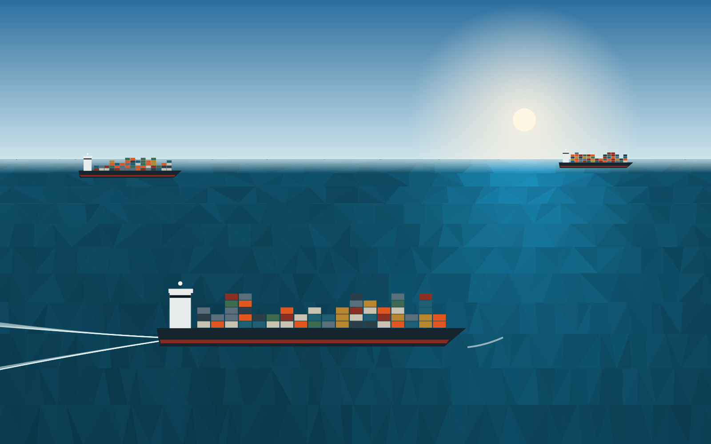
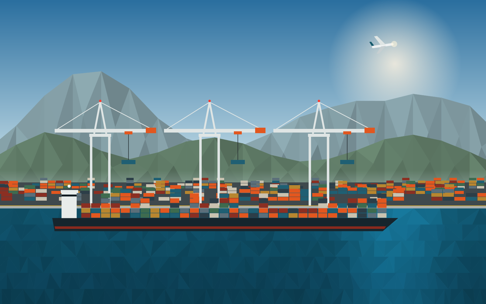
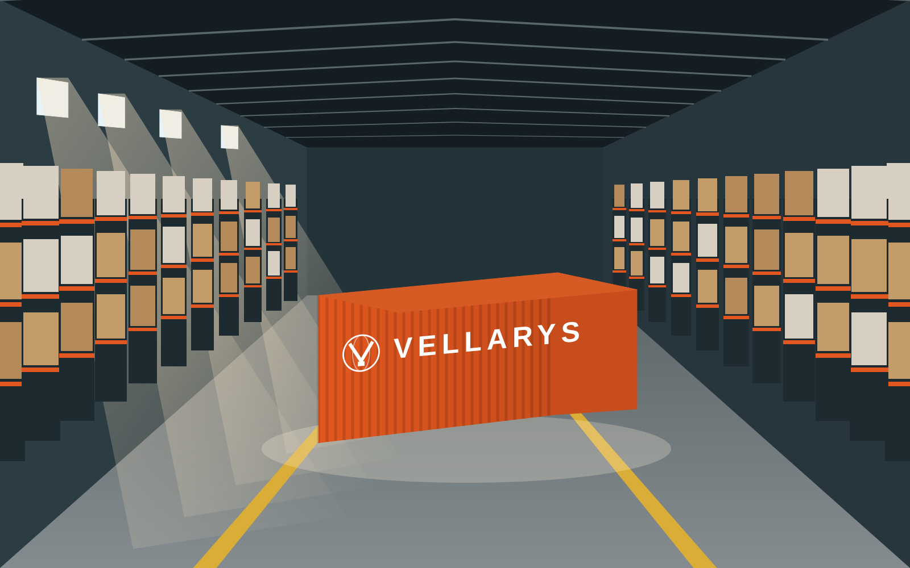

View from spaceVellarys International Logistics
The whole world fits in your cargo
From Espírito Santo, Brazil, to Europe, Asia and inland Brazil. Sea, air and road coordinated by one team, through the ports of Vitória, Tubarão and Praia Mole.
View from spaceVellarys International Logistics
From Espírito Santo, Brazil, to Europe, Asia and inland Brazil. Sea, air and road coordinated by one team, through the ports of Vitória, Tubarão and Praia Mole.

In transit01 · The Atlantic
We book space with the carrier, follow the vessel and report every change. You know where your cargo is without having to ask.

Port of Vitória02 · The Espírito Santo coast
A port complex close to where cargo is produced: coffee, stone, steel and inventory for Southeast Brazil ship out and arrive here.

Warehouse03 · Bonded warehouse
We receive, tally and store under customs control until the right time to release. Your cargo waits safely; your costs do not.
Container VLYU 202604-604 · Inside the container
Services, industries, routes and the infrastructure that takes your cargo from the other side of the world to your customer's door.
Services
Each service works on its own, but performs best together: the same team follows your cargo from vessel to truck.
FCL, LCL and breakbulk through Espírito Santo's ports, with booking, paperwork and tracking under one contact.
Urgent, sample and high-value cargo through Vitória Airport and Southeast Brazil's hubs.
Containers and cargo between the port and Southeast Brazil, on container chassis, curtain-side and box trailers.
Bonded storage, stuffing and unstuffing, inventory and scheduled release.
Partner customs brokers coordinated with transport, so cargo does not stall at the border.
Demo · fictional data
Enter the code DEMO-2026 to follow a fictional container on the Vitória–Rotterdam lane. The data, dates and container on this screen are for demonstration only.
Container
VLYU 202604-6
40' high cube · dry
Status
Vitória (BR) → Rotterdam (NL)
Already a customer?
Follow your real shipment in our tracking system.
Industries
Stone, beans, steel and cardboard boxes: each cargo has its own weight, smell and deadline. We plan the operation around it.
Granite, marble and quartzite blocks and slabs, with weight planning and lashing.
Green coffee in bags or bulk, with moisture control, lining and certificates.
Coils, slabs, rebar and project parts, with lashing plans and loading windows.
Imported inventory, warehousing and distribution to Southeast Brazil's consumer markets.
Routes
Two cross the ocean, two head up to Southeast Brazil. All of them start in Espírito Santo.
Coffee, stone and steel to Northern Europe and the Mediterranean; machinery and inputs inbound.
Stone and regional products to Asia; machinery, components and inventory inbound.
Containers and cargo between Espírito Santo's ports and Greater São Paulo, via the BR-101 and the Dutra.
Inputs, steel and containers between Espírito Santo's ports and Minas Gerais, via the BR-262.
Infrastructure and fleet
Two locations in Greater Vitória, equipment for every cargo type and a control centre that follows everything in real time.
Operations base, warehouse, road fleet and control centre.
Port support, container surveys and documentation next to the terminals.
For 20' and 40' containers between port, warehouse and customer.
For palletised, e-commerce and LTL cargo to Southeast Brazil.
For stuffing, unstuffing, storage and handling inside the warehouse.
A team monitoring trips, port windows and shipments.
Fictional company: quantities and capacities are added in the real project, from the client's own data.
Have cargo to ship or receive?
Tell us the origin, destination and what will travel. The answer comes with routing, mode and timing.
Safety and sustainability
Inspection before loading, seals checked at every delivery, driving hours respected and fewer empty kilometres.
See our practices →Inspection, verified seals and trip tracking.
Driving hours respected, PPE and preventive maintenance.
Fewer empty kilometres and the right mode for each leg.
Quote
Fill in the cargo details. When you submit, WhatsApp opens with the message ready for our sales team, and all you need to do is tap send.